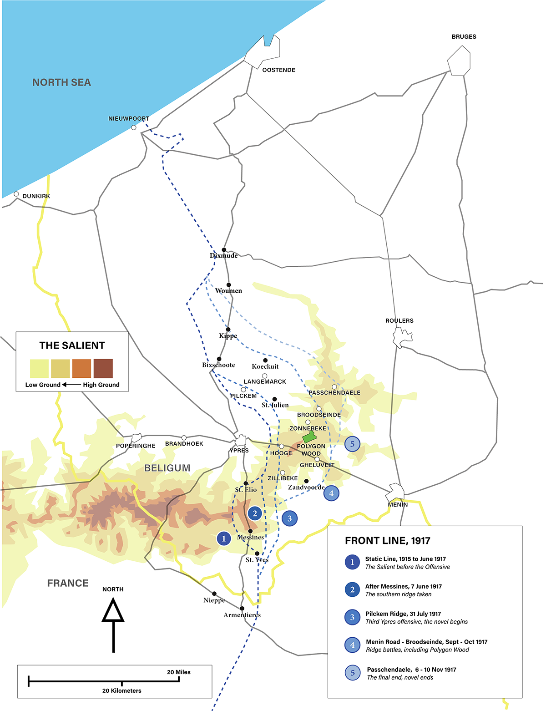
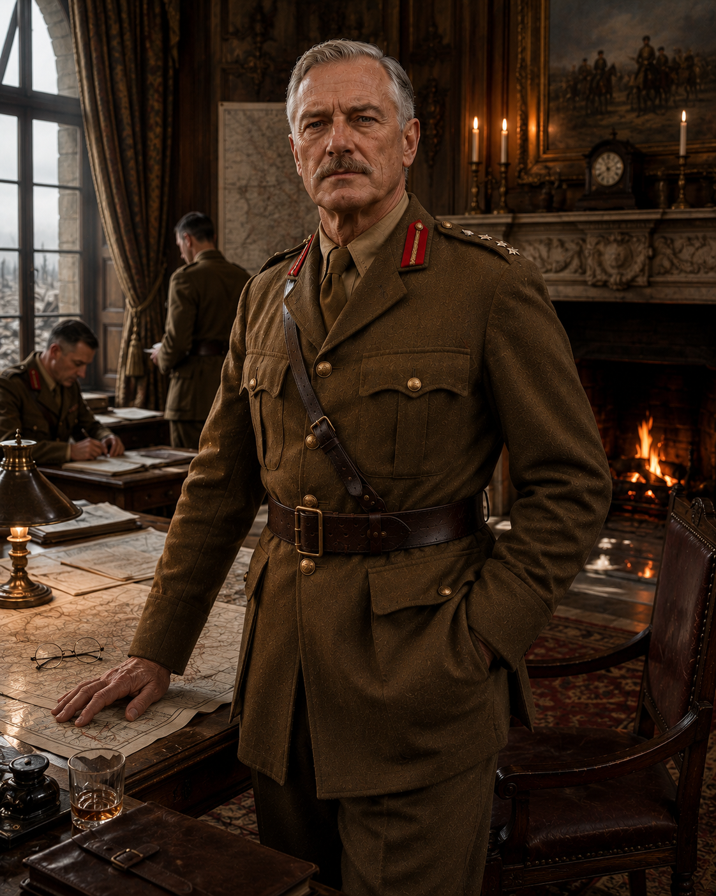
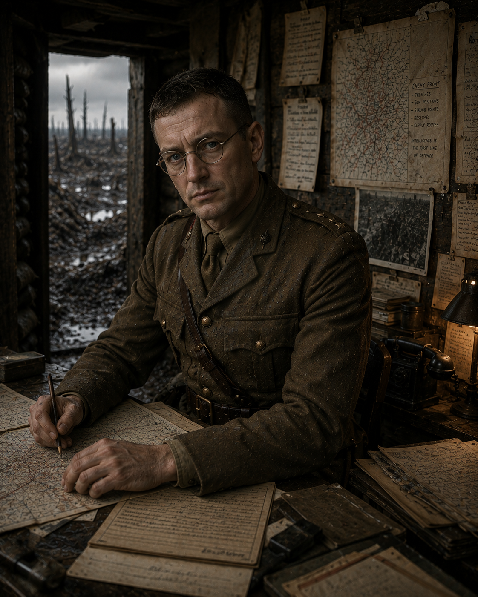
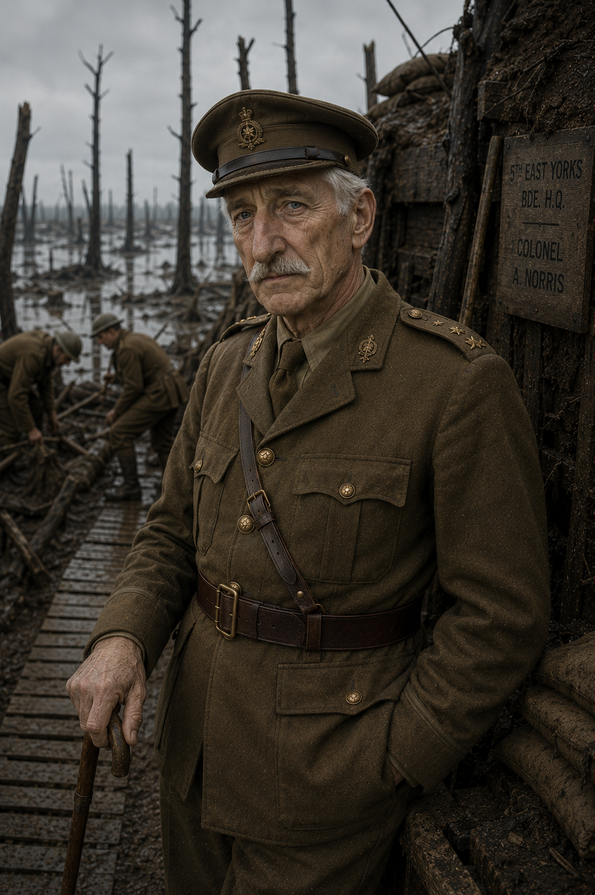
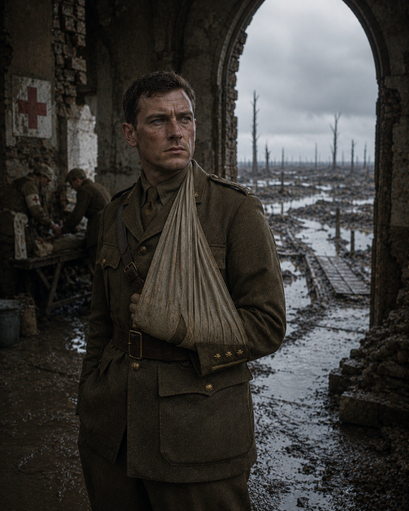
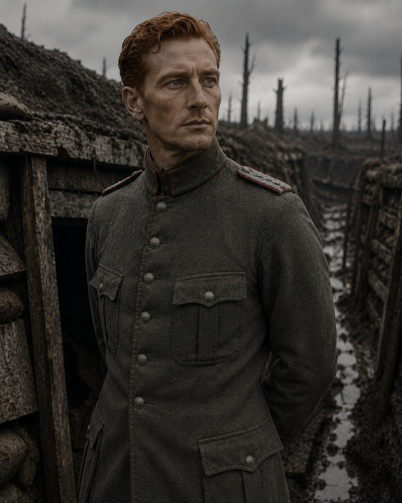
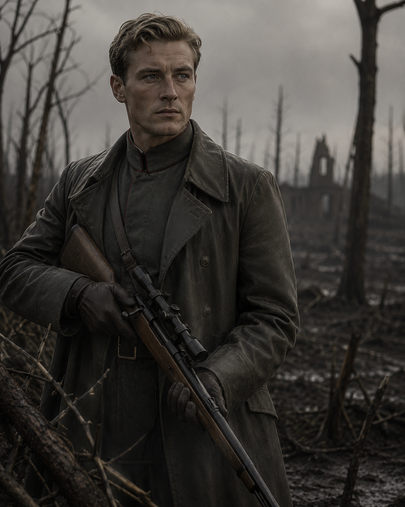
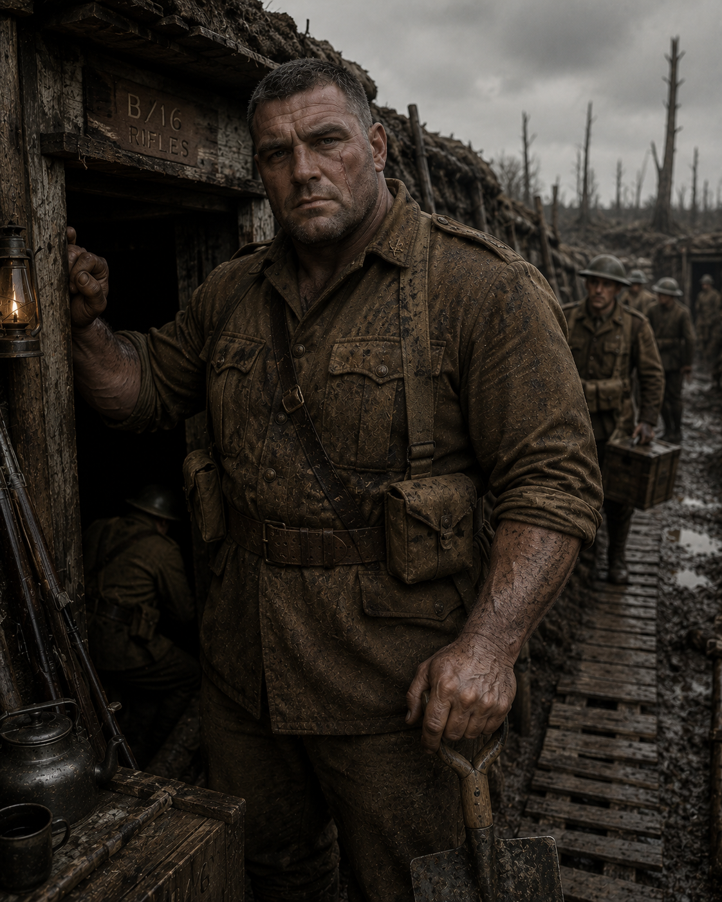

Literary Fiction · Historical
The Wrath of Archie Ellis
A retelling of the Iliad – Ypres, 1917
The book is built, chapter for chapter, on the structure of the Iliad: Ellis is Achilles, Eck is Hector.

Publishes 1 October 2026 · ISBN 979-8-9961025-0-1
The novel does not shy away from the violence of the First World War, including combat deaths, but nothing is rendered graphically. There is no profanity and no sexual content.
About the Book
Two officers.
Opposite sides of the wire.
Set during the Third Battle of Ypres in the autumn of 1917, the novel follows two officers on opposite sides of the wire — one British, one German, both carrying into an industrial war the honor codes of a much older one. It follows both men, and the men around them, from the opening days of the offensive toward a single night near its end — the night the whole book exists to reach.
The German side is written with the same weight, interiority, and precision as the British — Eck is not the enemy standing in for an idea of the enemy.
Most novels that borrow from the Iliad use it as decoration — an epigraph, a passing gesture. Here the structure is load-bearing: every chapter has a specific Homeric counterpart, tracked and held to, without Troy, Achilles, or Homer ever being named on the page.
The prose does not editorialize. Efficiency and bodies are rendered in the same flat register, and that refusal to soften or elevate is where the book does its damage. Nothing is explained to you as tragic. You are only shown what happened, and left to carry it.
It rewards attention: the parallels are encoded, not explained, and a reader who knows the Iliad will find a second book running underneath the first.
- mênis
- — the wrath of a hero whose honour has been violated
- kleos
- — the fame that outlives the man who earned it
- thumos
- — the will to act, more force than feeling
- nostos
- — the homecoming, or its refusal
The novel runs on these four terms. It never names them. The prose itself leans on Greek-rooted vocabulary throughout — deliberately, word by word.
For readers of Pat Barker's Regeneration, Sebastian Faulks's Birdsong, and Madeline Miller's The Song of Achilles.

Archie Ellis
Captain, B Company. Victoria Cross recipient. 1912 Olympic gold medalist. Built from two real men: Admiral Nelson supplies the wrath — at Trafalgar he went into battle with four orders of chivalry sewn to his coat, which is how a French marksman picked him out and killed him. Ellis wears his ribbons into action the same way. The finest officer in the Salient — until an order he refuses to follow costs two hundred and forty-seven men their lives.
POV Character
Harald Eck
Hauptmann. Forty-one, a civil engineer from Dresden, fifteen years into building bridges and lock gates when the mobilization orders came. He left his plans on the drafting table, told his wife Clara he'd be back before anything needed deciding, and went. He has known for weeks what's coming. He is holding his regiment together anyway.
POV CharacterThe Ground
Third Ypres, Autumn 1917
The novel follows the real campaign, phase by phase: Pilckem Ridge on 31 July, the Menin Road and Broodseinde through September and October, Passchendaele itself in early November. The battalion's farmhouse headquarters at Vlamertinghe, the forward dugout at B7, the ridge at Zonnebeke — every position in the book sits on ground you can still find on a map today.

The Company







Early reads


A Note from the Author
A note on what follows: I wrote this novel, and the guide that accompanies it, with a classroom in mind — a way to meet a young reader encountering Homer and the First World War for the first time. But the story doesn't belong only to that reader, any more than the Iliad it's built from does. Homer has outlasted every audience he was ever written for. Pride and what it costs the people around it. Grief with nowhere to go. What's owed to an enemy once he can no longer harm you. What a war is said to have accomplished, against what it actually cost. These aren't young readers' questions. They're everyone's.
I've taught thirteen-year-olds about ancient civilizations and the First World War for twenty years. The longer I taught both, the more convinced I became they were the same story: what happens when a world becomes very connected, and then, under pressure, cracks all at once. About the kind of men those worlds produce, and what those men are and aren't prepared for. About honor, and what it costs, and who pays.
One small design choice comes straight from the classroom: every chapter ends with a blank page. It's the kind of space I always wished the books I taught from had — room to write down the thought you had while it was still yours.
You have lived through a pandemic. You've watched wars start in places you'd never heard of a year before, and supply chains break for reasons that seemed to come from nowhere. None of that felt like ancient history while it was happening. It felt like Tuesday.
This novel is about two men on opposite sides of a strand of barbed wire, in a small piece of Belgium, in 1917 — carrying, into an industrial war neither of them was built for, values that belong to a much older one. It is the oldest story there is, and it keeps not staying in the past.
The prose is deliberately plain. No elevated language, no narrator telling you how to feel about a death. That flatness isn't coldness — it's the form the material demands. As Wilfred Owen, one of the war's own poets, put it: the poetry is in the pity, and the pity is in the accuracy.
More to Explore